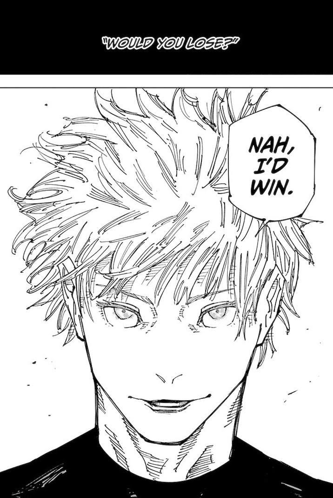

GOJO SOLA CAR******** 😤🦸♂️

Gojo Goat Máximo 😤🦸♂️🥳
Ela é tão poderosa que ele expandiu o seu domínio por apenas DOIS DÉCIMOS DE SEGUNDO 😱⏱️, e conseguiu derrotar mais de mil monstros de uma vez só! 👾💀🔥
Além disso, na batalha final entre O GOAT e o chorão do sukuna 😢, a expansão de domínio foi tão forte que danificou o cérebro do sukuna permanentemente 🧠💥.
Na batalha entre o feiticeiro mais forte da atulidade (GOJÃO) e o feiticeiro mais forte da história(sukuna😭😭😭), SOZINHO o gojão massacrou o sukuna a batalha inteira, mesmo o sukuna estando com 100% do seu poder, e com os dois shikigamis mais fortes da técnica das 10 sombras o gojão ainda conseguiu vencer a batalha, e o sukuna só conseguiu ganhar a batalha porque o autor da obra é um chorão que tem medo de matar o sukuna, e por isso ele teve que usar uma técnica de ressurreição pra trazer o sukuna de volta a vida, e mesmo assim o gojão ainda conseguiu vencer a batalha, ou seja, o sukuna só ganhou a batalha porque o autor é um chorão que tem medo de matar o sukuna, e mesmo assim ele perdeu a batalha, ou seja, o sukuna é tão fraco que só consegue ganhar a batalha porque o autor é um chorão que tem medo de matar o sukuna, e mesmo assim ele perdeu a batalha, ou seja, o sukuna é tão fraco que só consegue ganhar a batalha porque o autor é um chorão que tem medo de matar o sukuna, e mesmo assim ele perdeu a batalha, ou seja, o sukuna é tão fraco que só consegue ganhar a batalha porque o autor é um chorão que tem medo de matar o sukuna, e mesmo assim ele perdeu a batalha, ou seja, o sukuna é tão fraco que só consegue ganhar a batalha porque o autor é um chorão que tem medo de matar o sukuna, e mesmo assim ele perdeu a batalha, ou seja, o sukuna é tão fraco que só consegue ganhar a batalha porque o autor é um chorão que tem medo de matar o sukuna, e mesmo assim ele perdeu a batalha
GOJO SOLA CAR******** 😤🦸♂️